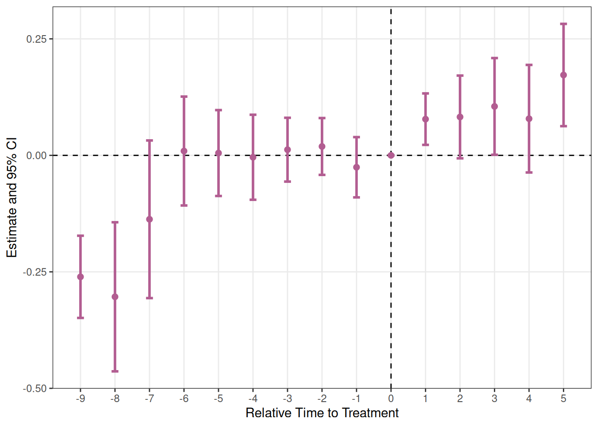

library(fixes)
library(tidyverse)はじめに
本ページでは、two-way fixed effects (TWFE)モデルのDifference-in-Differences (DiD)におけるイベントスタディを行うパッケージ、fixesについて説明します。
僕が今年（2025年）の年始から地道に作成してきたパッケージで、初のパッケージ作成で試行錯誤、紆余曲折を経ながらアップデートを重ねてきました。
Noteご意見待ってます
実戦経験が足りないパッケージなので、挙動がおかしかったり、こういう機能にも対応してほしいということがあれば、ページ下のコメントからどしどしお寄せください。こぢんまりしたページなので、いただいたものは余裕で全部対応できると思います。
これまでは処置個体において処置タイミングが同一のベーシックなイベントスタディにのみ対応していましたが、アップデートを経て各個体で処置タイミングが異なる、いわゆるStaggered DiDにおけるイベントスタディにも対応しました。
果たしてあらゆるケースに対応できているか、個人で開発しているパッケージとしては不安ではありますが、いくつかのデータセットでテストした分には問題なかったので、そのテストコードと併せて解説していきます。
使用するパッケージ
使用するのはfixesです。インストールは以下のコマンドでできます。
install.packages("fixes")
# or
# pak::pak("fixes")です。開発版はGitHubからインストールできます。
# install.packages("pak")
pak::pak("yo5uke/fixes")準備
パッケージを読み込んで、デモに使うデータを準備します。
データはfixestパッケージで用意されているbase_didおよびbase_staggと、MixtapeのStaggered DiDの章で使用されているcastleを使います。
df_castleに関しては、Mixtape内で行われている処理をし、変数を使用するものに絞っておきます1。
また、少し後で述べる通り、never-treatedユニットの扱いに注意しながら、year_treatedとtime_to_treatmentを作成しておきます。
library(fixest)
castle <- haven::read_dta(
"https://github.com/scunning1975/mixtape/raw/master/castle.dta"
)
# 以下Mixtape参考
# fmt: skip
dropped_vars <- c(
"r20004", "r20014", "r20024", "r20034", "r20044", "r20054", "r20064",
"r20074", "r20084", "r20094", "r20101", "r20102", "r20103", "r20104",
"trend_9", "trend_46", "trend_49", "trend_50", "trend_51"
)
region <- castle |>
select(starts_with("r20")) |>
names() |>
setdiff(dropped_vars)
df_castle <- castle |>
select(state, sid, year, treatment_date, l_homicide, all_of(region), popwt) |>
mutate(
is_treated = if_else(!is.na(treatment_date), 1, 0),
year_treated = if_else(is_treated == 1, treatment_date, 10000L),
time_to_treatment = if_else(is_treated == 1, year - treatment_date, -1000L)
)各データフレームは以下のような感じになっています。先頭の15行を見てみましょう。
| y | x1 | id | period | post | treat |
|---|---|---|---|---|---|
| 2.87530627 | 0.53653768 | 1 | 1 | 0 | 1 |
| 1.86065272 | -3.04318942 | 1 | 2 | 0 | 1 |
| 0.09416524 | 5.57684387 | 1 | 3 | 0 | 1 |
| 3.78147485 | -2.83005866 | 1 | 4 | 0 | 1 |
| -2.55819959 | -5.04435440 | 1 | 5 | 0 | 1 |
| 1.72873240 | -0.63638485 | 1 | 6 | 1 | 1 |
| 6.28423629 | -2.12988365 | 1 | 7 | 1 | 1 |
| 4.76688778 | 3.49185577 | 1 | 8 | 1 | 1 |
| 5.34753392 | 0.83798615 | 1 | 9 | 1 | 1 |
| 4.95146934 | 0.63388904 | 1 | 10 | 1 | 1 |
| -4.25798295 | -5.26462514 | 2 | 1 | 0 | 1 |
| 0.60611067 | -3.70483485 | 2 | 2 | 0 | 1 |
| 5.61637038 | -0.21742509 | 2 | 3 | 0 | 1 |
| -6.16941931 | -2.02699419 | 2 | 4 | 0 | 1 |
| 0.71186875 | 0.01140001 | 2 | 5 | 0 | 1 |
| id | year | year_treated | time_to_treatment | treated | treatment_effect_true | x1 | y |
|---|---|---|---|---|---|---|---|
| 90 | 1 | 2 | -1 | 1 | 0 | -1.09470213 | 0.01722971 |
| 89 | 1 | 3 | -2 | 1 | 0 | -3.71006765 | -4.58084528 |
| 88 | 1 | 4 | -3 | 1 | 0 | 2.52744015 | 2.73817174 |
| 87 | 1 | 5 | -4 | 1 | 0 | -0.72042631 | -0.65103066 |
| 86 | 1 | 6 | -5 | 1 | 0 | -3.67116779 | -5.33381664 |
| 85 | 1 | 7 | -6 | 1 | 0 | -0.31521367 | 0.49562631 |
| 84 | 1 | 8 | -7 | 1 | 0 | 0.32856334 | -1.58378245 |
| 83 | 1 | 9 | -8 | 1 | 0 | -0.08850915 | -1.33526257 |
| 82 | 1 | 10 | -9 | 1 | 0 | -2.34951611 | -1.35136167 |
| 81 | 1 | 10000 | -1000 | 0 | 0 | 2.31318716 | 1.77231442 |
| 80 | 1 | 10000 | -1000 | 0 | 0 | -0.56561061 | -0.78198640 |
| 79 | 1 | 10000 | -1000 | 0 | 0 | -3.15996610 | -4.78190340 |
| 78 | 1 | 10000 | -1000 | 0 | 0 | -7.24864781 | -8.69961178 |
| 77 | 1 | 10000 | -1000 | 0 | 0 | 1.32056216 | 1.67147189 |
| 76 | 1 | 10000 | -1000 | 0 | 0 | -1.68121120 | -1.85575812 |
| state | sid | year | treatment_date | l_homicide | r20001 | r20002 | r20003 | r20011 | r20012 | r20013 | r20021 | r20022 | r20023 | r20031 | r20032 | r20033 | r20041 | r20042 | r20043 | r20051 | r20052 | r20053 | r20061 | r20062 | r20063 | r20071 | r20072 | r20073 | r20081 | r20082 | r20083 | r20091 | r20092 | r20093 | popwt | is_treated | year_treated | time_to_treatment |
|---|---|---|---|---|---|---|---|---|---|---|---|---|---|---|---|---|---|---|---|---|---|---|---|---|---|---|---|---|---|---|---|---|---|---|---|---|---|---|
| Alabama | 1 | 2000 | 2006 | 2.027356 | 0 | 0 | 1 | 0 | 0 | 0 | 0 | 0 | 0 | 0 | 0 | 0 | 0 | 0 | 0 | 0 | 0 | 0 | 0 | 0 | 0 | 0 | 0 | 0 | 0 | 0 | 0 | 0 | 0 | 0 | 4499293.0 | 1 | 2006 | -6 |
| Alabama | 1 | 2001 | 2006 | 2.164867 | 0 | 0 | 0 | 0 | 0 | 1 | 0 | 0 | 0 | 0 | 0 | 0 | 0 | 0 | 0 | 0 | 0 | 0 | 0 | 0 | 0 | 0 | 0 | 0 | 0 | 0 | 0 | 0 | 0 | 0 | 4499293.0 | 1 | 2006 | -5 |
| Alabama | 1 | 2002 | 2006 | 1.936334 | 0 | 0 | 0 | 0 | 0 | 0 | 0 | 0 | 1 | 0 | 0 | 0 | 0 | 0 | 0 | 0 | 0 | 0 | 0 | 0 | 0 | 0 | 0 | 0 | 0 | 0 | 0 | 0 | 0 | 0 | 4499293.0 | 1 | 2006 | -4 |
| Alabama | 1 | 2003 | 2006 | 1.919567 | 0 | 0 | 0 | 0 | 0 | 0 | 0 | 0 | 0 | 0 | 0 | 1 | 0 | 0 | 0 | 0 | 0 | 0 | 0 | 0 | 0 | 0 | 0 | 0 | 0 | 0 | 0 | 0 | 0 | 0 | 4499293.0 | 1 | 2006 | -3 |
| Alabama | 1 | 2004 | 2006 | 1.749841 | 0 | 0 | 0 | 0 | 0 | 0 | 0 | 0 | 0 | 0 | 0 | 0 | 0 | 0 | 1 | 0 | 0 | 0 | 0 | 0 | 0 | 0 | 0 | 0 | 0 | 0 | 0 | 0 | 0 | 0 | 4499293.0 | 1 | 2006 | -2 |
| Alabama | 1 | 2005 | 2006 | 2.130440 | 0 | 0 | 0 | 0 | 0 | 0 | 0 | 0 | 0 | 0 | 0 | 0 | 0 | 0 | 0 | 0 | 0 | 1 | 0 | 0 | 0 | 0 | 0 | 0 | 0 | 0 | 0 | 0 | 0 | 0 | 4499293.0 | 1 | 2006 | -1 |
| Alabama | 1 | 2006 | 2006 | 2.079652 | 0 | 0 | 0 | 0 | 0 | 0 | 0 | 0 | 0 | 0 | 0 | 0 | 0 | 0 | 0 | 0 | 0 | 0 | 0 | 0 | 1 | 0 | 0 | 0 | 0 | 0 | 0 | 0 | 0 | 0 | 4499293.0 | 1 | 2006 | 0 |
| Alabama | 1 | 2007 | 2006 | 2.145690 | 0 | 0 | 0 | 0 | 0 | 0 | 0 | 0 | 0 | 0 | 0 | 0 | 0 | 0 | 0 | 0 | 0 | 0 | 0 | 0 | 0 | 0 | 0 | 1 | 0 | 0 | 0 | 0 | 0 | 0 | 4499293.0 | 1 | 2006 | 1 |
| Alabama | 1 | 2008 | 2006 | 2.043598 | 0 | 0 | 0 | 0 | 0 | 0 | 0 | 0 | 0 | 0 | 0 | 0 | 0 | 0 | 0 | 0 | 0 | 0 | 0 | 0 | 0 | 0 | 0 | 0 | 0 | 0 | 1 | 0 | 0 | 0 | 4499293.0 | 1 | 2006 | 2 |
| Alabama | 1 | 2009 | 2006 | 1.938684 | 0 | 0 | 0 | 0 | 0 | 0 | 0 | 0 | 0 | 0 | 0 | 0 | 0 | 0 | 0 | 0 | 0 | 0 | 0 | 0 | 0 | 0 | 0 | 0 | 0 | 0 | 0 | 0 | 0 | 1 | 4499293.0 | 1 | 2006 | 3 |
| Alabama | 1 | 2010 | 2006 | 1.747940 | 0 | 0 | 0 | 0 | 0 | 0 | 0 | 0 | 0 | 0 | 0 | 0 | 0 | 0 | 0 | 0 | 0 | 0 | 0 | 0 | 0 | 0 | 0 | 0 | 0 | 0 | 0 | 0 | 0 | 0 | 4499293.0 | 1 | 2006 | 4 |
| Alaska | 2 | 2000 | 2005 | 1.491518 | 0 | 0 | 0 | 0 | 0 | 0 | 0 | 0 | 0 | 0 | 0 | 0 | 0 | 0 | 0 | 0 | 0 | 0 | 0 | 0 | 0 | 0 | 0 | 0 | 0 | 0 | 0 | 0 | 0 | 0 | 651473.2 | 1 | 2005 | -5 |
| Alaska | 2 | 2001 | 2005 | 1.846246 | 0 | 0 | 0 | 0 | 0 | 0 | 0 | 0 | 0 | 0 | 0 | 0 | 0 | 0 | 0 | 0 | 0 | 0 | 0 | 0 | 0 | 0 | 0 | 0 | 0 | 0 | 0 | 0 | 0 | 0 | 651473.2 | 1 | 2005 | -4 |
| Alaska | 2 | 2002 | 2005 | 1.665124 | 0 | 0 | 0 | 0 | 0 | 0 | 0 | 0 | 0 | 0 | 0 | 0 | 0 | 0 | 0 | 0 | 0 | 0 | 0 | 0 | 0 | 0 | 0 | 0 | 0 | 0 | 0 | 0 | 0 | 0 | 651473.2 | 1 | 2005 | -3 |
| Alaska | 2 | 2003 | 2005 | 1.823279 | 0 | 0 | 0 | 0 | 0 | 0 | 0 | 0 | 0 | 0 | 0 | 0 | 0 | 0 | 0 | 0 | 0 | 0 | 0 | 0 | 0 | 0 | 0 | 0 | 0 | 0 | 0 | 0 | 0 | 0 | 651473.2 | 1 | 2005 | -2 |
base_staggに関して、year_treatedが10000、time_to_treatmentが-1000となっているユニットがありますが、これは処置を受けないユニット（never-treated）を示しています。
fixesが内部的に使用しているfixest::sunab()関数は、year_treatedにデータのyearの範囲外にある大きな値（ここでは10000）を設定することで、これらを自動的にnever-treatedとして認識し、参照グループ（対照群）として扱います。time_to_treatmentにも同様に極端に小さい負の値（-1000）を設定しています。
これは、Staggered DIDにおいてnever-treatedのユニットの値をNAにしてしまうと、推定から完全に除外されてしまい、処置群と比較する対照群が失われてしまうためです。Never-treatedは処置効果を識別するための重要な比較対象なので、データに含める必要があります。
# never-treatedの確認
base_stagg |>
filter(year_treated == 10000) |>
select(id, year, year_treated, time_to_treatment, treated) |>
head() id year year_treated time_to_treatment treated
1 81 1 10000 -1000 0
2 80 1 10000 -1000 0
3 79 1 10000 -1000 0
4 78 1 10000 -1000 0
5 77 1 10000 -1000 0
6 76 1 10000 -1000 0
TipNever-treatedユニットの扱いについて
Staggered DIDのデータセットをご自分で用意される場合も、never-treatedのユニットには同様の処理が必要です：
# 例：処置年がNAのユニットをnever-treatedとして設定
df <- df |>
mutate(
year_treated = if_else(
is.na(year_treated),
max(year, na.rm = TRUE) + 1000, # または10000など
year_treated
),
time_to_treatment = if_else(
year_treated > max(year), # never-treatedの条件
-1000,
year - year_treated
)
)ポイント：year_treatedはデータの時間範囲外の大きな値（例：10000）、time_to_treatmentは極端に小さい負の値（例：-1000）を設定します。これにより、fixesの内部処理（fixest）が適切にnever-treatedを認識します。
run_es()
基本的な使い方と一緒にパッケージについて説明していきます。関数はイベントスタディを実行するrun_es()関数とイベントスタディをggplotベースでプロットするplot_es()です。
ひとまず、run_es()の基本的な引数を説明します。
run_es(
data,
outcome,
treatment,
time,
timing,
fe = NULL,
lead_range = NULL,
lag_range = NULL,
covariates = NULL,
cluster = NULL,
weights = NULL,
baseline = -1L,
interval = 1,
time_transform = FALSE,
unit = NULL,
staggered = FALSE,
method = c("classic", "sunab"),
conf.level = 0.95,
vcov = "HC1",
vcov_args = list()
)| 引数 | 説明 |
|---|---|
data |
パネルデータを含むデータフレーム |
outcome |
結果変数（変数名または式、例：log(y)のように記述） |
treatment |
処置変数（0/1または論理値）。method = "classic"の場合のみ使用 |
time |
時間変数（数値型またはDate型） |
timing |
classicの場合：処置タイミング（全ユニット共通の数値/Dateまたはstaggered = TRUE時は変数名）。sunabの場合：処置採用時点を示す変数 |
fe |
固定効果の指定（片側式、例：~ id + year）。固定効果なしの場合はNULL |
lead_range, lag_range |
処置前後の期間範囲を指定する整数。NULLの場合は自動決定 |
covariates |
追加の共変量（片側式、例：~ x1 + log(x2)） |
cluster |
クラスター指定（片側式~ id + year、列名の文字列、またはnrow(data)の長さのベクトル） |
weights |
観測ウェイト（変数名/片側式またはnrow(data)の長さの数値ベクトル） |
baseline |
ベースライン期間（デフォルト：-1）。“classic”と”sunab”の両方で、参照期間として結果から除外される |
interval |
時間変数の間隔（デフォルト：1。Date型の場合は内部で無視される） |
time_transform |
TRUEの場合、ユニット内で連続した整数時間を作成 |
unit |
ユニット識別変数（time_transform = TRUEの場合は必須。指定時はメタデータにも使用） |
staggered |
TRUEの場合、timing変数を使用（classicの場合）またはsunabで利用 |
method |
"classic"または"sunab"を指定（デフォルト："classic"） |
conf.level |
信頼水準（デフォルト：0.95）。数値ベクトルで複数指定可能 |
vcov |
分散共分散行列の種類。fixest::vcov()またはbroom::tidy(vcov = ...)に渡される（デフォルト："HC1"） |
vcov_args |
fixest::vcov()に渡す追加引数のリスト |
文字で見てもわかりにくいと思うので、読み込んだデータを使って関数を回してみましょう。
通常のDiDにおけるイベントスタディ
es <- run_es(
data = base_did,
outcome = y,
treatment = treat,
time = period,
timing = 6,
fe = ~ id + period
)基本的なケースであればこれくらいの指定で済みます。プロットは後のセクションでまとめて載せます。
Staggered DiD 1
es_stagg1 <- run_es(
data = base_stagg,
outcome = y,
treatment = treated,
time = year,
timing = year_treated,
fe = ~ id + year,
staggered = TRUE,
method = "sunab"
)先ほどと違う点は、staggeredがTRUE、methodが”sunab”、timingが具体的な数値ではなく、処置年を示す変数を指定しているところです。
“sunab”はSun and Abraham (2021)で提唱されている方法を指し、Staggered DiDにおけるイベントスタディで有用です。裏ではfixest::sunab()関数を使っています。
Staggered DiD 2
# 共変量の変数を式の形にしておく
covariates <- as.formula(paste("~", paste(region, collapse = "+")))
es_stagg2 <- run_es(
data = df_castle,
outcome = l_homicide,
treatment = is_treated,
time = year,
timing = year_treated,
fe = ~ state + year,
covariates = covariates,
cluster = ~ sid,
weights = ~ popwt,
baseline = 0,
staggered = TRUE,
vcov = "cluster"
)今回の例は共変量が多いので事前にas.formula()を使って処理してしまっていますが、関数内でcovariates = ~ cov1 + cov2のような指定の仕方で問題ありません。
また、ここではvcovも”cluster”に指定して、sidでクラスタリングした標準誤差を計算しています。vcovについては、?fixest::feols()で詳細を確認できます。
plot_es()
こだわりがなければ、plot_es(es)の程度の書き方でプロットを出力することができます。引数の説明は後に回して、一旦先ほどのイベントスタディの結果をプロットしてみましょう。
通常のDiDにおけるイベントスタディ
plot_es(es)
後の2つもそうですが、ベースラインがデフォルトのままなので、処置前年（-1）が抜けて値が0をとっています。
Staggered DiD 1
plot_es(es_stagg1)
Staggered DiD 2
plot_es(es_stagg2)
Staggeredの方もいい感じにプロットできています。この図はMixtape内でlead変数とlag変数を手作業で作って実装しプロットされていますが、その図と見比べても同じ推移が示されていることがわかります。
使い方
基本的には上の使い方で十分ですが、ggplotベースで作ったこともあり、柔軟な対応も可能です。
plot_es(
data,
type = "ribbon",
vline_val = 0,
vline_color = "#000",
hline_val = 0,
hline_color = "#000",
linewidth = 1,
pointsize = 2,
alpha = 0.2,
barwidth = 0.2,
color = "#B25D91FF",
fill = "#B25D91FF"
)data：run_es()で作成した結果のデータフレームtype：ribbonとerrorbarが指定可能vline_val：縦の破線の位置（デフォルトは0）vline_color：縦の破線の色（デフォルトは#000（黒））hline_val：横の破線の位置（デフォルトは0）hline_color：縦の破線の色（デフォルトは#000（黒））linewidth：折れ線の太さ（デフォルトは1）pointsize：点の大きさ（デフォルトは2）alpha：リボンの透明度（デフォルトは0.2）color：線と点の色（デフォルトは#B25D91FF（ピンク））fillリボンの色（デフォルトは#B25D91FF（ピンク））
plot_es()関数内でもある程度自由度をもって設定できます。
例えばプロットをエラーバーのタイプにしてみましょう。
plot_es(es_stagg2, type = "errorbar")
さらに色も変えてみます。
plot_es(es_stagg2, type = "errorbar", color = "#000")
リボンタイプとエラーバータイプがあり、さらにそこからある程度の自由度もある点が他のパッケージに対する優位性にもなっています。
ちなみに、ggplotベースということで、ggplotの関数をつなげることも可能です！
plot_es(es_stagg2, type = "errorbar", color = "#000") +
geom_hline(yintercept = .08, color = "red") +
annotate(
"text",
x = 3,
y = -.1,
label = "DD Coefficient = 0.08\n(s.e. = 0.03)"
)
Mixtape風に係数を示す水平線と注釈を追加してみました。このようにどんどん要素を追加していくことができます。
plot_es_interactive()
plot_es()で作成したプロットをインタラクティブにする関数も用意しています。plot_es_interactive()です。
この関数で表示したプロットは、マウスオーバーで各点の推定値と信頼区間が表示されたり、ズームイン・ズームアウトができたりします。
論文に載せるための関数ではないものの、結果の確認やコミュニケーションの際に便利かと思います。
plot_es_interactive(es_stagg2)マウスオーバーすると値が表示されます。
こちらもplot_es()と同様に、引数で色や線の太さなどを指定できますので、いろいろ試してみてください。
おわりに
まだまだ開発途上ですが、staggeredまで対応できたので、これからしばらくはブラッシュアップを念頭にアップデートしていこうと思います。
冒頭にも書きましたが、もし使っていただいて「使いにくい」や「こんな機能が欲しい」等ありましたら、以下のコメントやGitHubのIssuesまでお願いします。
🔗 データ出典
データ出典：Causal Inference: The Mixtape（Scott Cunnningham, 2021）
データはGitHub上で公開されており、以下のリポジトリから入手可能です：
https://github.com/scunning1975/mixtape
また、データはMITライセンスのもとで提供されています。